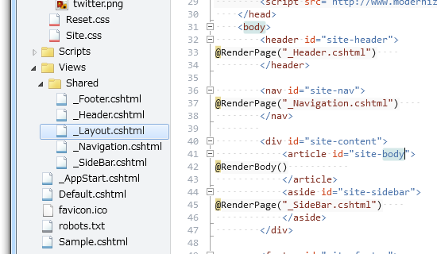

WebMatrix + ASP.NET Web Pages でキレイにコーディングしたい
公開日：
Razor 構文を使用する ASP.NET Web Pages は web framework および WebMatrix の一部で、Windows を使用した Web サイトの構築で必要なすべてが含まれます。
Download: Razor 構文を使用する ASP.NET Web Pages - Microsoft Download Center - Download Details
WebMatrix + ASP.NET Web Pages でキレイにコーディングしたいなぁ、と思うのだけれど、どうするのが正しいのかよくわからない。自分なりのテンプレみたいなのがほしいんだけれどね。
設定の共通化
まず、 Web サイト全体の設定は一元管理したい。たぶん、これは“_AppStart.cshtml”に記述するのが正しいのだろう。
@{
App.Title = "daruyanagi.net";
App.Author = "daruyanagi";
App.Language = "ja";
App.Encoding = "utf-8";
App.Copyright = "Copyright © 2012 daruyanagi. All rights reserved.";
App.Description = "This is the web site of Hidetoshi Yanagi a.k.a. daruyanagi.";
App.Keyword = "daruyanagi";
}
これでも十分に簡素だけれど、設定ファイルやデータベースからロードできるようにすればもっとクールかもしれない。

App（や、このあとにでてくる Page）は dynamic 型（WebPageExecutingBase.App*1）なので、あらかじめメンバーを定義しておかなくても、あとからいろいろ追加できる。
@{
AppState["customAppName"] = "Application Name";
}
ほんとは AppState というのを使うっぽいけど、まぁ、いいや。
レイアウトの共通化
つぎは、 Web サイトのデザインの共通化。 HTML 5 でレイアウトファイル（“~/Views/Shared/_Layout.cshtml”）記述して、 jQuery / Modernizr / html5.js あたりのスクリプトをロードしておくのがモダンなやり方というものだろう。あと、リセット CSS で一度スタイルをリセットし、そのあとに独自の CSS を充てるようにした。ブラウザー幅によってデザインを変更するレスポンシブな部分を担当する CSS を切り分ければ、より一層メンテナンス性は上がるかも。ただ、あんまりファイル数は多くしたくないな。
@{
App.Title = App.Title ?? "Untitled Application";
App.Language = App.Language ?? "en";
App.Encoding = App.Encoding ?? "utf-8";
Page.Title = Page.Title ?? "Untitled Page";
}
<!DOCTYPE html>
<html lang="@App.Language">
<head>
<title>@Page.Title - @App.Title</title>
<meta charset="@App.Encoding" />
<meta name="description" content="@App.Description">
<meta name="keywords" content="@App.Keyword">
<meta name="author" content="@App.Author">
<meta name="copyright" content="@App.Copyright">
<meta name="genarator" content="Microsoft WebMatrix 2.0">
<meta name="viewport"
content="width=device-width,initial-scale=1">
<link rel="stylesheet" href="~/Content/Reset.css" />
<link rel="stylesheet" href="~/Content/Site.css" />
<!–[if lt IE 9]>
<script src="http://html5shiv.googlecode.com/svn/trunk/html5.js"></script>
<![endif]–>
<script src="http://code.jquery.com/jquery-latest.js"></script>
<script src="http://www.modernizr.com/downloads/modernizr-latest.js"></script>
</head>
<body>
<header id="site-header">
@RenderPage("_Header.cshtml")
</header>
<nav id="site-nav">
@RenderPage("_Navigation.cshtml")
</nav>
<div id="site-content">
<article id="site-body">
@RenderBody()
</article>
<aside id="site-sidebar">
@RenderPage("_SideBar.cshtml")
</aside>
</div>
<footer id="site-footer">
@RenderPage("_Footer.cshtml")
</footer>
</body>
</html>
冒頭は、“_AppStart.cshtml”で Title などを指定し忘れたときに、最低限のパラメータを指定しておくコード。今まで気づかなかったのだけれど、<meta name="author” content=”@App.Author”> で @App.Author が null だと、 content 属性は出力されず、 <meta name="author”> だけが出力されるんだね。なかなか頭いいな。

ヘッダーやナビゲーション、サイドバー、フッターは外部ファイルに追い出した。ここらへんは「分割し、統治せよ（divide et impera）」*2ってやつですな。
@{
Layout = "~/Views/Shared/_Layout.cshtml";
Page.Title = "Default";
}
<p>Web ページの内容。</p>
あとは、こんな感じで @RenderBody() でレンダリングする内容を記述すればいいというわけ。ページ固有のデータは、 dynamic 型の変数 Page に格納しておくことができる。
@{
PageData["Color1"] = "Red";
PageData["Color2"] = "Blue";
} PageData （IDictionary
あとはこれを適当に CSS で装飾すると、こんな感じになる。

これからの目標
今見返してふと思ったのは、比較的簡単にテーマ機能なんかを実装できるなということ。ただデザインを変えたいがために、毎回一からこんなの作るのはアホらしい。
あと、 @RenderPage("_Footer.cshtml") は @RenderFooter() などと記述できるとカッコいいな。「フッターはテーマフォルダ直下の“_Footer.cshtml”に書く」。なるべく規約ベースで。これも簡単にできそうだ。
汎用的な部分はガンガン外に追い出して、再利用できるといい。
まとめ
ASP.NET MVC はとてもすばらしい技術だと思うけれど、素人に毛の生えたレベルではどうもデカ過ぎる。その点、 ASP.NET Web Pages はちょうどいい。大規模なサービスを作ろうと思うとすぐぐちゃぐちゃになって破綻するけれど（そんな場合は MVC パターンの力を借りるべきだ）、“Template.html”をひたすらコピペして新しい記事を作るような個人サイトならば、 ASP.NET Web Pages で十分なんだ。サーバーを IIS にして、拡張子を html から cshtml にするだけでいい。たったこれだけで、 C# ＋ Razor を使ってキレイにコーディングできる。今から覚えるんだったら、 PHP より C# ＋ Razor のほうが簡潔かつ安全でいいと思うし。
ドキュメントは、とりあえずこれを読んどけばいい。わしも全部は読んでないけれど、これの紙バージョンをもっていてたまに読んでいる。お盆休み中に、また復習してみようと思う。
あとは、しばやんのやる気を待つしかない。
また、おいおい Razor に関しては備忘録をかねて書いていきたいと思うかも。